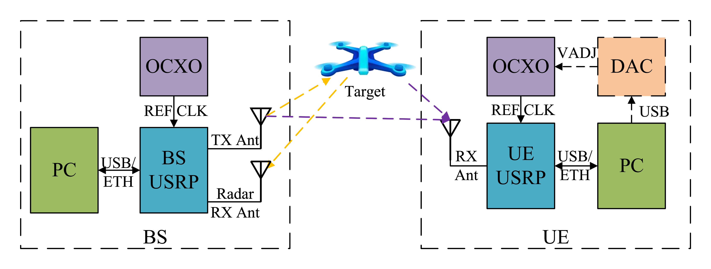
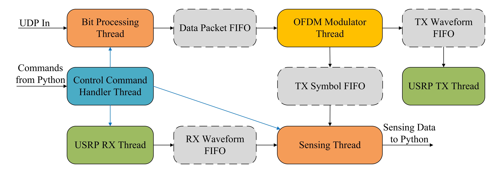
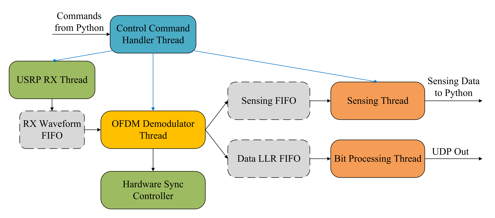

系统架构
OpenISAC 实验平台包括一个基站 (BS) 和一个用户设备 (UE)，每个设备都基于USRP 构建，并由恒温晶振 (OCXO) 提供参考时钟。
图 1. OpenISAC 系统架构。
BS 节点： 主控 PC 通过 USB/以太网连接 USRP，生成 ISAC 基带波形，并将其传输到 USRP。USRP 发送信号并在单独的接收天线上接收雷达回波。
UE 节点： 主控 PC 与 USRP 通信以获取下行链路信号。USRP 使用 OCXO 作为参考时钟，可选择通过 DAC 进行驯服，以最小化双站感知的载波/采样频率偏差。
BS 软件架构
BS 软件是一个多线程流水线，使用环形缓冲区 FIFO 将 I/O 与计算解耦。
图 2. BS 软件架构。
- 比特处理： 处理 UDP 负载、LDPC 编码和加扰。
- OFDM 调制器： 执行 QPSK 映射、导频插入、IFFT 和 CP 插入。如果流量较低，则用随机比特填充。
- 无线电 I/O： “USRP-TX”发送波形；“USRP-RX”接收雷达回波。
- 感知线程： 执行实时单站感知（OFDM 解调、除法、距离-多普勒图）。支持稀疏处理以降低运算负担。
UE 软件架构
UE 也是一个多线程流水线，专为鲁棒的同步和接收而设计。
图 3. UE 软件架构。
- USRP RX： 获取下行基带信号并执行定时调整。
- OFDM 解调器： 在两种状态下运行：
- SYNC_SEARCH： 搜索 ZC 同步符号以估计帧边界和 CFO。
- NORMAL： 执行 FFT、信道估计、均衡和 LLR 计算。如果失去锁定，则重新进入搜索状态。
- 感知线程： 使用 {RX, TX} 符号对进行实时双站感知。
- 比特处理： 解扰和 LDPC 解码以恢复 UDP 负载。